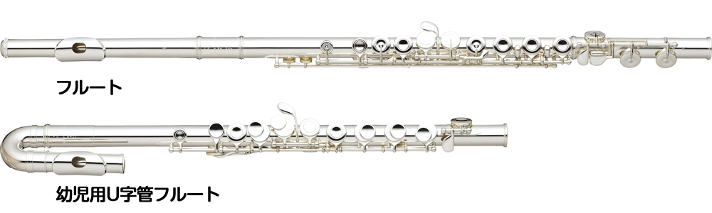

子供のコース
小学校1年生から子供用のU字管フルートを使用してレッスン可能です。
小学校3～4年生からストレートのフルートでレッスン可能です。
この度は、パステル音楽教室ホームページへお越しいただき、ありがとうございます。こちらは座間市相模が丘(小田急相模原駅から徒歩8分)にあるフルートとオカリナの個人教室です。
音楽は「心の栄養」「心のサプリ」であり、日々の生活に癒しや楽しさ、感動を与えてくれます。
特にフルートはその澄んだ音色で豊かな感情を表現し、オカリナは素朴であたたかい音色が人の気持ちをホッとさせてくれます。どちらも心に優しく響く楽器です。
私はこの素晴らしいフルートとオカリナの魅力を皆様と共有し、一緒に音楽を楽しむ時間を大切にしております。パステル音楽教室のレッスンでは、講師歴25年以上のスキルを活かして、一人ひとりのペースに合わせた丁寧な指導を心がけております。初めての方から経験のある方まで、また、小学生から80代の方まで安心して学べる環境をご用意しております。
音楽を通して、心に豊かさと栄養を取り入れたい方、日々の忙しい中でも自分時間を楽しみたい方、ぜひ、一度体験レッスンにお越しください。皆様にお会いできることを楽しみにしております。
Flute & Ocarina奏者
Hiroko Kan
「コロナ禍で疲れた心を癒せるような音楽をお届けしたい」との思いから、2020年にYouTube『Pastel harmony』チャンネルを開設し、さまざまなジャンルの音楽をお届けしています。合わせてお楽しみください。
子供のコース（小学生）…音符が読めなくても安心
子供小学校1年生から子供用のU字管を使用して、
小学校3～4年生からストレートのフルートでレッスン可能です。
音符を読めるようになること、楽器の持ち方、支え方など、フルートに慣れることから始めていきましょう。
| 学年 | レッスン時間／回数 | 月額レッスン料 | 使用教材 |
|---|---|---|---|
| 低学年（1～3年生） | 30分 × 3回／月 | 6,000円 | フルートレッスンのための小曲集（リューギンシャ出版） |
| 高学年（4～6年生） | 30分 × 3回／月 | 7,000円 | フルート教本（ドレミ楽譜出版） |
※施設使用料、諸経費込み
奏でたい音色でお気に入りの曲を奏でるレッスン
「横に長い笛を支える」というフルート特有の難しさを克服する為、楽器の構え方や支え方をしっかり学び、音の響かせ方や自然な息使いを学ぶことで、自分の吹きたい曲を自分の音色で楽しく奏でられるようにしていきましょう。講師とのデュエットでアンサンブルについても学んでいきます。
上級者/音高•音大受験コース…受験対策に特化した内容のレッスン
音色作りから受験校に合わせた対策まで指導いたします。また、受験生同等以上の上級者のためのレッスンにも対応いたします。
主な使用教材：
| レッスン時間 | １回／月 | ２回／月 | ３回目以降（1回につき） |
|---|---|---|---|
| 60分 | 6,000円 | 10,000円 | +5,000円 |
| 45分 | 5,500円 | 9,000円 | +4,500円 |
| 30分 | 5,000円 | 8,000円 | +4,000円 |
※施設使用料、諸経費込み
お教室スタンダードコース…基礎から楽しく学んでレパートリーがどんどん増えるレッスン
初級の方は、音符の読み方からオカリナの指使い、リズムのとり方、ブレスの位置などを学んで曲を仕上げていきましょう。
中級の方は、講師と二重奏曲を学びながら自然な息使い、音の響かせ方、アンサンブルについてを学ぶことができます。
| レッスン時間 | １回／月 | ２回／月 | ３回目以降（1回につき） |
|---|---|---|---|
| 60分 | 5,000円 | 9,000円 | +4,000円 |
| 30分 | 3,000円 | 5,500円 | +2,500円 |
※施設使用料、諸経費込み
使用教材：ご相談
オンラインコース…フルート
音の出せる環境であれば、誰でもどこでもレッスンを受けることができます。
基礎練習のチェックやレパートリーを増やすツールにすることができます。
オンラインコース…オカリナ
遠くまでお教室に通えない方も自宅で音楽を楽しむことができます。日々感じるオカリナへの疑問、質問など、プロからのアドバイスで問題解決。更に楽しいオカリナライフを…！
| レッスン時間 | １回 |
|---|---|
| 60分 | 5,000円 |
| 30分 | 3,000円 |
※諸経費込み
使用教材：ご相談
※基礎練習から曲まで、充実したレッスンプログラムを基本としていることから、60分コースをお勧めしております。
寒い日も暑い日も笑顔で迎えてくれます。もちろんレッスン中も余裕の笑顔なのですが、アドバイスは的確すぎて、こちらは顔が引き攣り、うまく音が出ず凹んでしまいます。それでも満面の笑顔で送り出されると、また頑張ろう！と博子先生の魔法にかかってしまうのです。
町田市 T.K.様
菅先生のオカリナ演奏を聴いた時に私もオカリナを習いたい！と思い立ちレッスンしていただいています。初めて聴＜オカリナの優しく美しい音色に心惹かれました。レッスン中の先生のオカリナの音に聞き惚れたり、楽譜の読み方も教えて頂きつつ自分で奏でる事の楽しさを教えていただいています。最近先生とデュエットして頂く事も多くなり更に楽しさが増しています。
横浜市 M.K.様
博子先生のもとフルートを習い始め、先生の優しく誠実で穏やかなお人柄に助けられてアラ還の今に至るまで25年も楽しく続けることができています。
学ぶ楽しさや音楽を奏でる喜びはもちろんのこと、フルートを通してこの歳になっても尚、少しずつでも成長や新しい気づきを得られることは本当に幸せなことだなぁと思います。
毎週のレッスン日は今や欠かすことのできない心のオアシスであり、人生の大切な潤いです。
これからも楽しく続けていきたいです。
厚木市 A.T.様
透明感のある優しい音色のフルートを演奏してみたい！と思い習い始めました。最初は音が出るかな？出来るかな？と不安でしたが初めて音の出た瞬間の嬉しさは今でも覚えています。
そしてその後続けて来られているのも博子先生の温かいお人柄と優しくて的確なご指導のおかげと感謝しています。
ジャンルの違うさまざまな曲を時間をかけて仕上げていくのは楽しく充実感があります。
フルートのある日常は今ではなくてはならないもので私にとってとても幸せな時間です。
伊勢原市 S.T.様
フルートを奏でてみたい思いは以前からあったのですが、吹奏楽器を手にするのは小学生時代のリコーダー以外は未経験で不安の方が大きかった私でした。
博子先生のご指導のもとレッスンを始めて良かったと、今すごく感じてます。優しいお人柄とフルートをこよなく愛するお気持ちが最大の魅力です。今では毎週のレッスンが待ち遠しいです。
茅ヶ崎市 Y.T.様
コロナ禍の流れで月一回はリモートレッスンですが、心地良い集中を味わっています。良くも悪くも音の変化や響きの違いを指摘してもらい、一人部屋で汗をかいています💦
町田市 T.K.様
フルート・オカリナ講師
菅 博子（Hiroko Kan）
また講師活動の傍ら、地域音楽コーディネーターとして，町田•神奈川県央地区を中心に音楽の裾野を広げる為の演奏活動，イベント企画を行なっている。
また、「コロナ禍で疲れた心を癒せるような音楽をお届けしたい」と考え2020年にYouTube『Pastel harmony』チャンネルを開設し、様々なジャンルの音楽をお届け中。
Qualifications & Affiliations（資格・所属）
フルート、オカリナのご依頼を承ります。
フルート・オカリナソロ演奏、または、ご希望に応じてフルート２人〜４人のアンサンブル演奏もご依頼可能です。
ホールコンサート、パーティー演奏、学校コンサート、ショッピングモールでの演奏、ピアノの発表会等のゲスト演奏、BGM演奏など、様々なイベントでの演奏依頼を承っております。
初心者の方から経験者の方まで、安心して学べる環境をご用意しております。お一人１回のみ2,000円で体験レッスンしていただきます。
入会申込書に必要事項をご記入の上、入会金2,000円を添えてお申し込み下さい。
レッスンの時間や回数は料金表に記載の通りです。レッスンは月末に次月の日程を講師と相談して決めております。天災や講師都合による休講の場合のみ振替が可能です。
レッスン料は前月の最終レッスン時までにお支払い下さい。支払い方法は現金、銀行振込、PayPayが利用可能です。レッスン料金は全て税込価格となっております。
退会される場合は、当月の15日までに講師にご連絡下さい。途中退会でも当月のレッスン料は返金できません。
レッスンには使用教材の教本以外に曲集も使用しますので、詳細は講師にお尋ね下さい。通学には公共交通機関をご利用下さい。駐車場はございません。
A：頭部管のみお子さん向けのU字管を使用すれば小学1年生前後（身長120cm前後）から始められます。
小学3~4年生（身長130cm前後）から大人と同じストレート管を使用できます。
A：楽譜の読み方、リズムの取り方もレッスンしていきますのでご安心ください。
まずは、一度体験レッスンにいらしてください。
A：はい。お一人さま１回（30分程度）2,000円で体験していただけます。（体験レッスン後1週間以内にご入会された場合は、入会金2,000円を免除いたします。）
A：専用駐車場のご用意はございません。
近隣にコインパーキングはいくつかございます。そちらを各自ご利用下さいませ。
A：体験時、レッスン時はフルート、オカリナ共にお教室の楽器を貸し出しできます。（お子さん用U字管もご用意ございます）
なお、ご自宅への貸し出しはしておりません。
A：オカリナ、フルート共に安価なものから高価格のものまでたくさんの種類があるので、お値段やメーカーによっての値段の違いなどの説明をしながらご予算とご希望にあった楽器の購入のお手伝いをさせていただけます。
A：基本的には生徒さんのご都合の欠席について振り替えはしておりませんが、早目の日程変更についてはご相談ください。
また、講師の都合、台風、天災等、の休講に関しては振り替えさせていただきます。
講師や生徒様方の演奏活動、レッスン室などを紹介させていただいております。
講師活動紹介
講師の活動やニュース、お問合せ等に便利なLINE登録リンクをご紹介しています。


{kind=link}
{kind=link}
{kind=link}
{kind=link}
{kind=link}
{kind=link}
{kind=link}
{kind=link}
{kind=link}
{kind=link}
{kind=link}
{kind=link}
{kind=link}
{kind=link}
{kind=link}